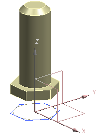
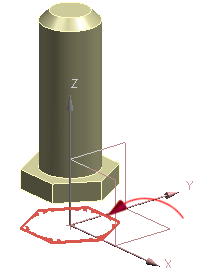

为颚板螺栓(plate screw)组件创建一个引用集
您将为 des02_plate_screw 组件新建一个引用集，您只想将 S21_Hex 草图添加到新建的引用集中。
-
在装配导航器
 中，右击其中一个 des02_plate_screw 节点并选择设为显示部件。
中，右击其中一个 des02_plate_screw 节点并选择设为显示部件。
-
再次打开引用集对话框。
-
点击添加新的引用集
 。
。 -
在引用集名称对话框中，键入 sketch_1并回车。
-
选择如图所示的 S21_HEX 草图。

-
在设置组中，清除自动添加组件
 复选框。
复选框。 -
查看弹出的警报，并点击关闭。
-
在装配导航器中，右击 des02_plate_screw 节点并选择显示父项→des02_fixed_jaw_assm。